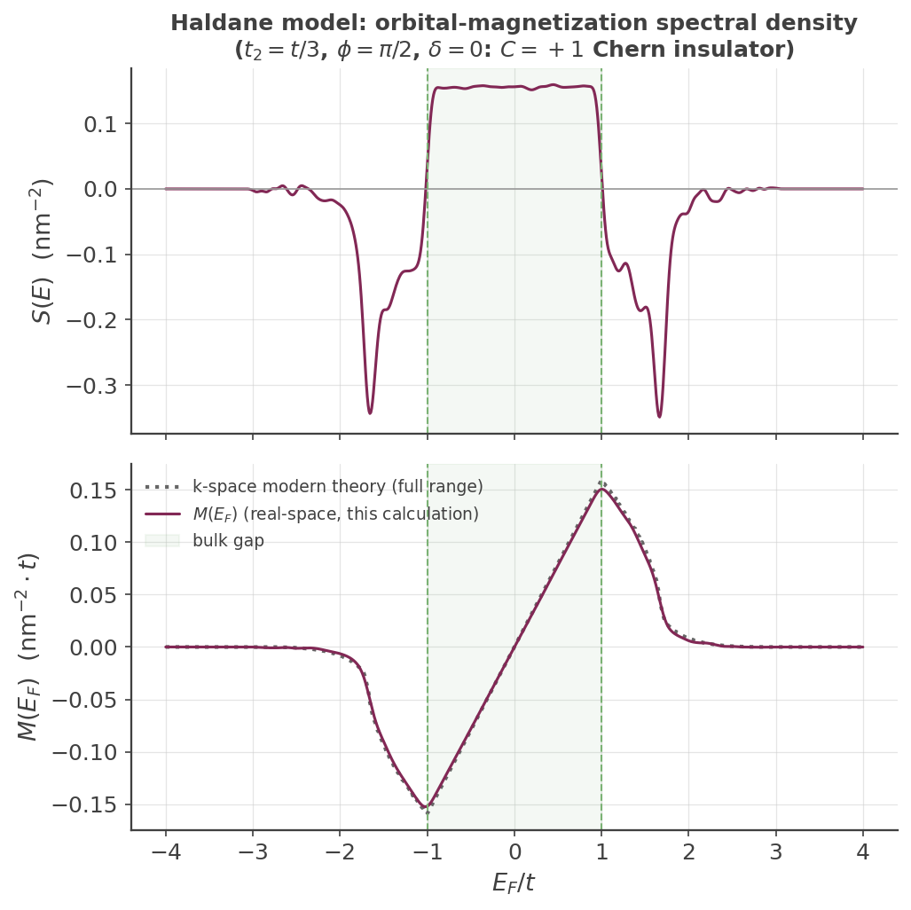

Orbital Magnetization (Rank-One Vertex)
Orbital magnetization: a real-space spectral approach with a rank-one vertex¶
The custom-vertex spin Hall page shows KITE's rank-two machinery
(custom_two()), which evaluates a two-operator Kubo-Bastin correlator
\(\mathrm{Tr}[T_m(\hat H)\,B\,T_n(\hat H)\,A]\). This page uses the complementary rank-one method,
custom_one(), to compute a genuinely different kind of quantity: an
energy-resolved spectral function of a single operator, which upon integration up to the Fermi level yields
a ground-state expectation value. The operator here is the orbital magnetic moment, and the example
reproduces, at laptop scale, the real-space spectral approach to orbital magnetization of Vidarte et al.1
What orbital magnetization is, and why it is subtle¶
The orbital magnetization \(\mathbf M\) is the magnetic moment per unit volume arising from the orbital (as opposed to spin) motion of the electrons. Classically a magnetic moment is \(\mathbf m=\tfrac12\,\mathbf r\times(-e)\dot{\mathbf r}\), so the natural quantum operator for its \(z\)-component is built from the position \(\hat{\mathbf r}\) and the velocity \(\hat{\mathbf v}=\dot{\hat{\mathbf r}}\). The subtlety that makes orbital magnetization a decades-long theoretical problem is that \(\hat{\mathbf r}\) is unbounded and ill-defined under periodic boundary conditions — you cannot simply take a bulk Bloch-state expectation value of \(\hat r\). The modern theory of orbital magnetization resolves this in \(\mathbf k\)-space (Xiao, Shi & Niu3; Thonhauser, Ceresoli, Vanderbilt & Resta4); the approach used here1 instead works directly in real space with open boundaries, where \(\hat r\) is well-defined, and expands the resulting spectral function in Chebyshev polynomials — precisely what KITE's KPM engine is built for. The reference defines
with \(e>0\) the elementary charge (the electron's own charge \(-e\) is already the explicit minus sign) and \(\mathcal A\) the sample area — the commutator form quoted in the reference's abstract.
Building the operator: the rank-one vertex, derived¶
examples/haldane_orbital_magnetization.py defines the vertex as the raw commutator, with plain
real coefficients:
Recall that operator strings apply right-to-left, so "rx.vy" \(=\hat r_x\hat v_y\) (with
\(\hat v_y\) acting first). This vertex evaluates to exactly
i.e. \(A\) is the operator combination inside \(\hat M_z\) above, with no extra coefficient — the whole physical prefactor \(-ie/(2\hbar c\mathcal A)\) is applied later, in post-processing (see below), not baked into the vertex.
Why there's no i in the vertex, and why that's correct
KITE's raw "vx"/"vy" DSL token is \([\hat H,\hat r]\) — missing the \(i/\hbar\) factor of
the textbook Hermitian velocity operator (a deliberate KITE convention, see
KITE-tools --CustomOne). \(A\) above is built from one ("v" token per
term, an odd count), so \(\mathrm{Tr}[T_n(\hat H)A]\) comes out purely imaginary, not real — the genuine
physical signal, not noise. custom_one() auto-detects this parity directly from the vertex
string (NumVelocities) and --CustomOne uses it to reconstruct the correct (imaginary)
component automatically — you do not need to insert a compensating i yourself.
How custom_one differs from custom_two¶
custom_one() (this page) |
custom_two() (spin Hall page) |
|
|---|---|---|
| operators | one vertex \(A\) | two vertices \(A\), \(B\) |
| Chebyshev family | single | double (nested) |
| output | moment vector \(\mu_n=\mathrm{Tr}[T_n(\hat H)\,A]\) | moment matrix \(\Gamma_{mn}=\mathrm{Tr}[T_m(\hat H)\,B\,T_n(\hat H)\,A]\) |
| yields | an operator-weighted spectral density \(\to\) ground-state expectation value | a two-point response (conductivity, spin Hall, …) |
Under the hood (Src/Simulation/Custom/SimulationRankOne.cpp), custom_one()
seeds a random vector \(|r\rangle\), applies \(A\) to it, then runs a single Chebyshev recursion generating
\(T_n(\hat H)\,A|r\rangle\) and accumulates \(\langle r|T_n(\hat H)\,A|r\rangle\) as the stochastic estimate of
\(\mu_n=\mathrm{Tr}[T_n(\hat H)\,A]\).
From moments to spectral density and magnetization¶
Unlike custom_two(), custom_one() does have a KITE-tools post-processing step:
KITE-tools --CustomOne reconstructs the raw energy-resolved trace \(S_{\rm
raw}(E)\) from the moments with the same Jackson-kernel machinery as --DOS, including the
\(1/E_{\rm scale}\) Jacobian and the real/imaginary rotation this vertex's odd velocity count requires.
Two remaining normalization factors turn \(S_{\rm raw}(E)\) into the actual physical density
\(S(E)=\mathrm{Tr}[\hat M_z\,\delta(E-\hat H)]\) (both applied in
process_haldane_orbital_magnetization.py):
- Per-orbital → per-area. KITE's stochastic trace is normalized per total degree of freedom (verified
directly:
--DOSintegrates to exactly \(1\) over the whole spectrum, not the number of orbitals per cell). Converting to a genuine per-unit-area density multiplies by \(N_{\rm orbitals}/\mathcal A_{\rm cell}\) (read directly from the output file'sNOrbitalsandLattVectors) — the per-cell factors cancel between the extensive trace and the extensive sample area, leaving this fixed ratio. - Hopping-value rescaling. KITE's
"vx"/"vy"are built directly from the hopping values as exported to the HDF5 — whichsrc/kite/__init__.pydivides byEnergyScalebefore KITEx runs. So the vertex KITE actually evaluates is \(A_{\rm computed}=A_{\rm physical}/E_{\rm scale}\), and reconstructing the physical density requires multiplying by \(E_{\rm scale}\) to compensate.
With \(e=\hbar=c=1\): \(S(E) = 0.5\,E_{\rm scale}\,(N_{\rm orbitals}/\mathcal A_{\rm cell})\,S_{\rm raw}(E)\). Its running integral \(M(E_F)=\int_{-\infty}^{E_F}S(E)\,dE\) is the orbital magnetization up to Fermi level \(E_F\).
The Haldane model and why this phase is topological¶
The example uses the Haldane model2 — a single-spin Chern insulator — not the spin-doubled Kane-Mele construction of the spin Hall page. On the honeycomb lattice with two sublattices A/B, nearest-neighbour hopping is \(-t\) and the next-nearest-neighbour hopping carries a complex Haldane phase, \(+\phi\) on the A–A bonds and \(-\phi\) on the B–B bonds, with \(t_2=t/3\), \(\phi=\pi/2\), \(\delta=0\) (no Semenoff mass).
The bulk gap is \(|E|<1\), not \(\sqrt3\). The local Dirac-point mass is \(3\sqrt3\,t_2\sin\phi=\sqrt3\approx1.73\),
but the lattice model's actual (smaller) indirect band gap — verified numerically to 10 significant figures
via kite.visualize.hamiltonian_k and independently via a
Fukui-Hatsugai-Suzuki lattice Chern-number calculation (converged, gap never closes from a \(20\times20\) to
\(120\times120\) k-mesh) — is exactly \(|E|<1\). Both calculations agree the filled/valence band has Chern
number \(C=+1\) for this bond-phase assignment.
Boundaries are OPEN, and this is mandatory: the position operator entering the vertex is only well-defined without periodic wrapping. A direct and physically important consequence is that the finite open sample hosts chiral edge states that traverse the bulk gap and carry orbital magnetization — so, unlike the density of states, the orbital-magnetization spectral density is generically nonzero inside the bulk gap.
A small amount of Anderson disorder helps convergence. haldane_orbital_magnetization.py adds
weak uniform on-site disorder (\(W=0.05\), well below the gap) on both sublattices and averages over several
disorder realizations — this converges the stochastic trace considerably faster than a fully clean, large
num_random_ run would on its own (matching the same lesson learned for the
Kane-Mele disorder example). Note that the Haldane model has no particle-hole
symmetry, so the density of states — and hence the stochastic-trace convergence rate — genuinely differs
between \(E>0\) and \(E<0\); a num_random_ too low for the harder side shows up as visibly more
residual noise in \(S(E)\) on that side, even though the two sides use the same disorder and moment count.
Verified result¶
At \(L=128\), \(M=256\) moments, \(R=800\) random vectors, \(4\) disorder realizations, the full KITEx run
takes about four and a half minutes on a laptop.

The upper panel shows bulk-band weight for \(|E|\gtrsim1\), sharp resonance dips right at the gap edges, and a roughly constant in-gap density from the finite-system edge states. The lower panel compares this real-space result against the k-space modern theory of orbital magnetization3,4 (Berry curvature and orbital moment of each band, integrated over the Brillouin zone) evaluated at every \(E_F\) across the full spectrum — not restricted to the gap. The two agree closely across the entire range, including the bulk-band region and the resonance features near the gap edges: the root-mean-square deviation between the two curves is ~1% of the peak magnetization. Inside the gap, \(M(E_F)\) rises linearly; a fit restricted to \(|E|<0.8\) gives \(\left.dM/dE_F\right|_{\rm fit}=0.156\), compared to the exact topological (Streda-relation) prediction \(C/(2\pi)=0.1592\) for \(C=+1\) — agreement to ~2%.
Example
Get more familiar with KITE: run examples/haldane_orbital_magnetization.py
and its post-processing yourself, and try tuning \(\phi\) away from \(\pi/2\) or turning on a Semenoff mass
\(\delta\) toward the transition at \(\delta=\sqrt3\) — the in-gap slope of \(M(E_F)\) should collapse as the
phase becomes trivial.
-
K. J. U. Vidarte, H. P. Veiga, J. M. Viana Parente Lopes, R. Cardias, A. Ferreira, T. P. Cysne, and T. G. Rappoport, "Real-Space Spectral Approach to Orbital Magnetization," Phys. Rev. B, doi:10.1103/bhg8-c3rw (arXiv:2512.01575). ↩↩
-
F. D. M. Haldane, Phys. Rev. Lett. 61, 2015 (1988). ↩
-
D. Xiao, J. Shi, and Q. Niu, Phys. Rev. Lett. 95, 137204 (2005). ↩↩
-
T. Thonhauser, D. Ceresoli, D. Vanderbilt, and R. Resta, Phys. Rev. Lett. 95, 137205 (2005). ↩↩